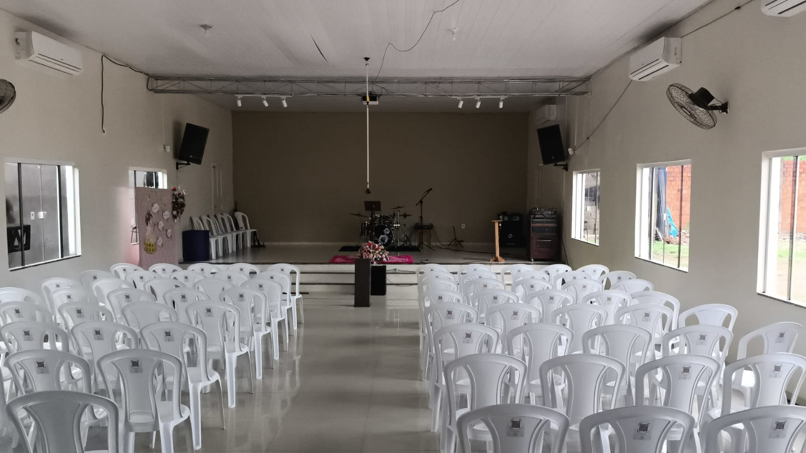
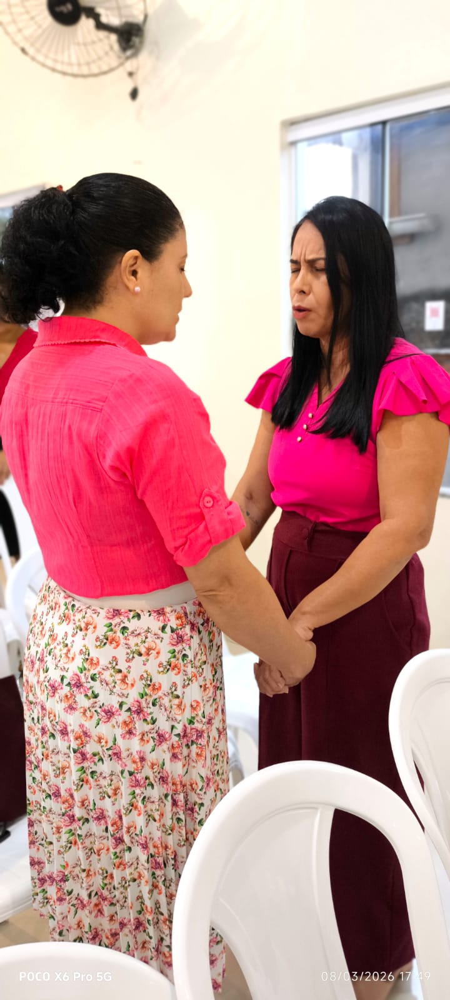
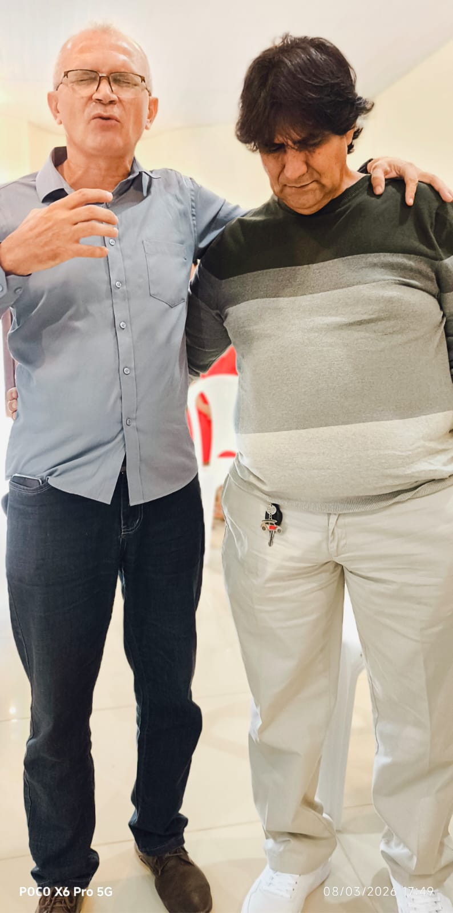
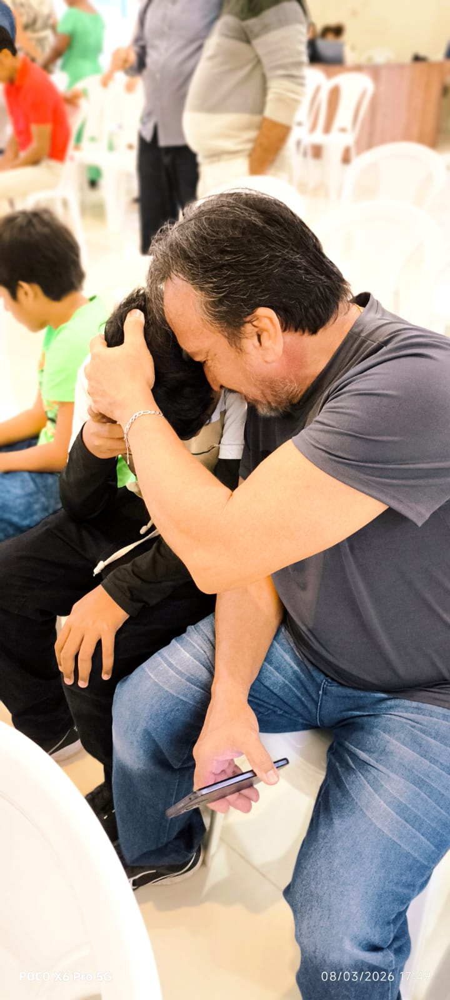

Macapá • AP
"Tudo para a Glória de Deus."
Uma comunidade centrada em Cristo, comprometida com a Palavra e o amor ao próximo. Seja bem-vindo à nossa família de fé no coração do Amapá.
Confira nossos dias e horários de celebração.
Encontre o seu lugar para servir a Deus.
Fique por dentro de tudo o que acontece aqui.
Saiba onde estamos localizados em Macapá.

A Igreja Batista Maranata é mais do que um templo; é um lar espiritual. Há décadas, servimos a cidade de Macapá com a missão de proclamar o Evangelho de Jesus Cristo, acolhendo cada pessoa com amor e guiando-a no caminho da verdade bíblica.
Ensino fiel às Escrituras em todas as nossas atividades.
Um lugar onde você é conhecido e amado verdadeiramente.
Existem diversas formas de servir e crescer. Encontre o grupo que mais combina com seu momento de vida.

Cuidando do coração dos nossos pequenos.

Fortalecendo mulheres na fé e no propósito.

Liderança bíblica e integridade masculina.
Uma geração apaixonada por Jesus.

Adoração em espírito e em verdade.

Comunicação criativa para o Reino.
O amor de Cristo em ações práticas na comunidade.
O projeto Cesta do Amor atende dezenas de famílias em Macapá com itens básicos de alimentação e higiene, levando o pão físico e o pão da vida.

Reserve um tempo para estar na presença do Senhor.
Ensino para todas as idades
Celebração e Palavra
Intercessão e Estudo
Consultar Calendário
Programação Sazonal
Não importa qual seja a sua carga, queremos levar suas petições ao trono da graça junto com você. Sua mensagem será entregue ao nosso ministério de intercessão.
Contribua com a obra de Deus através do dízimo, ofertas e projetos missionários.